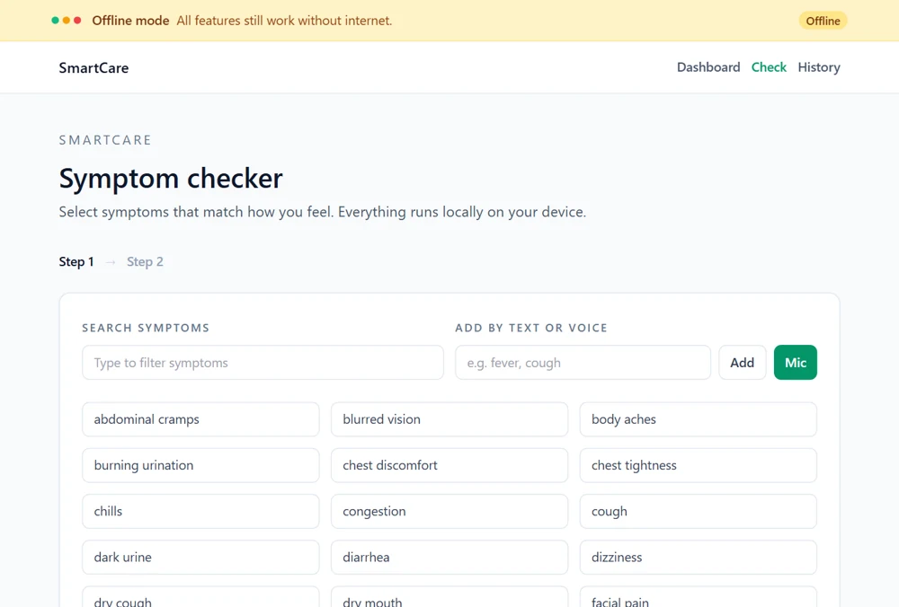
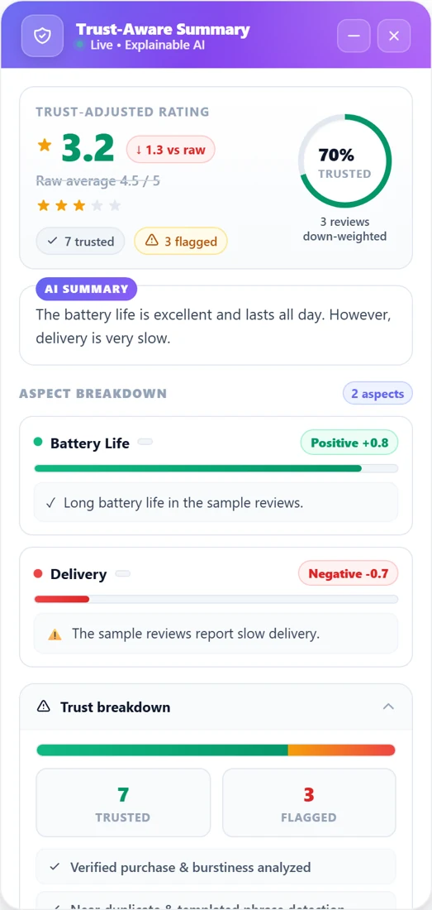
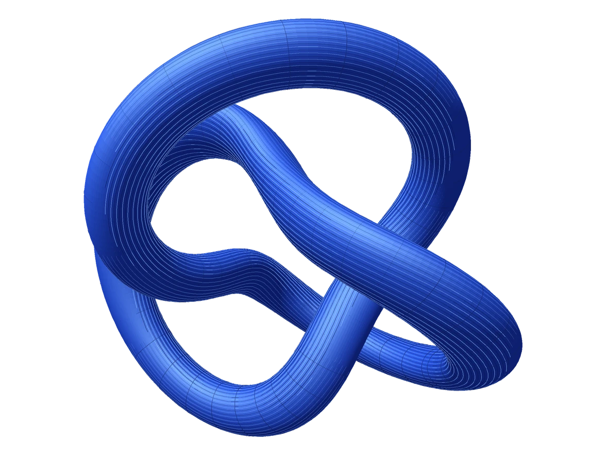

Kaaran

Which block needs the most attention?
Pandharpur has three flagged clusters in the district sample.
Inspect 3 clusters
Bhalwad Khurd Kendra
The mathematics score fell 11.6 points more than elsewhere in the block.
B.Tech Computer Engineering / VIT Pune
I build AI systems that can show their work.
My engineering work connects language models with verifiable data, from a bilingual analyst for education officers to a tutor that explains a tree rotation.
Pandharpur has three flagged clusters in the district sample.
The mathematics score fell 11.6 points more than elsewhere in the block.
Choose a node and rotate its subtree. A balanced AVL tree has a balance factor between −1 and 1 at every node.
Select a rotation to test the structure.
Each client contributes one parameter. Change its sample count to see how much influence it has.
(1 × 1 + 3 × 1 + 5 × 1) ÷ 3 = 3
Collaborative engineering
Four projects co-built with Niraj Chavan, spanning offline software, language interfaces and learning systems.
A symptom-checking application designed for low-connectivity settings, with local storage in the browser.


An extension that groups product reviews by aspect and explains the findings.
Project repositoryQuestion banks, timed assessments and exam results in a shared platform for students and administrators.
Project repositoryA seven-agent tutor combines rule-based validation with explanations of misconceptions across six tree structures.
Open tree labPublications & intellectual property
Co-authored conference research on cross-client training and evaluation across three datasets.

Background
I study Computer Engineering at VIT Pune. My main interest is how a system can explain the result it gives someone.
In Kaaran, code computes the figures and the language model helps express the findings. That division of responsibility also shapes how I approach validation, testing and interfaces.
Contact
For AI engineering internships, research and technical collaborations.